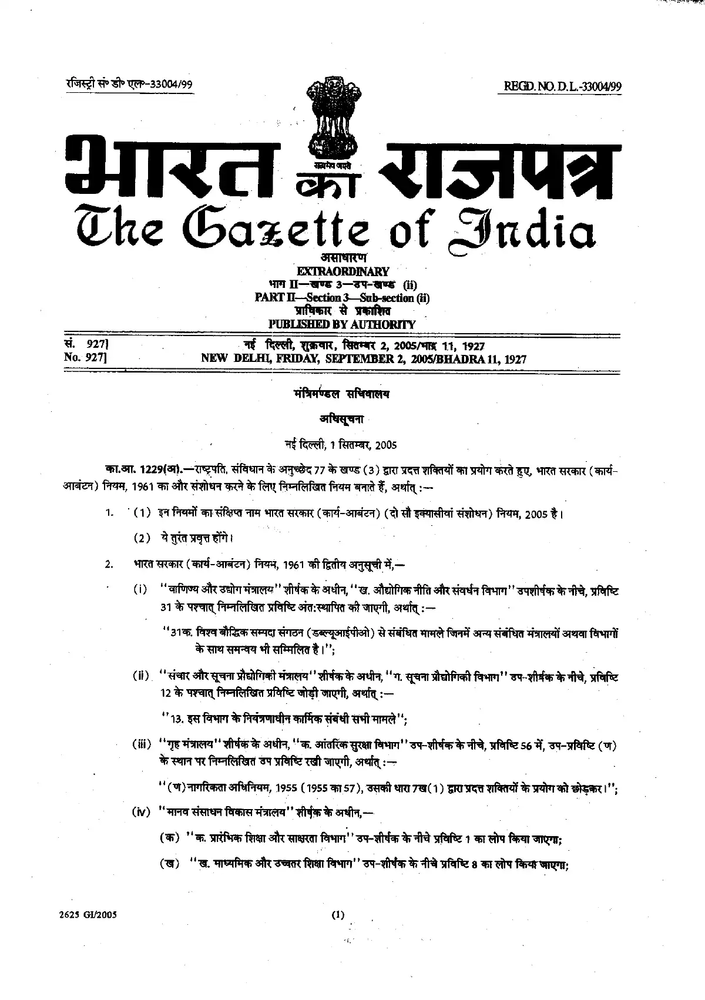
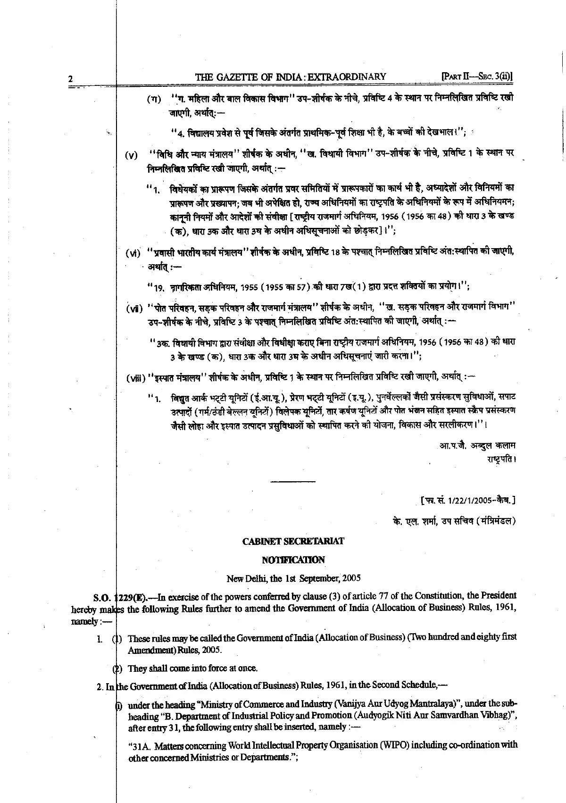
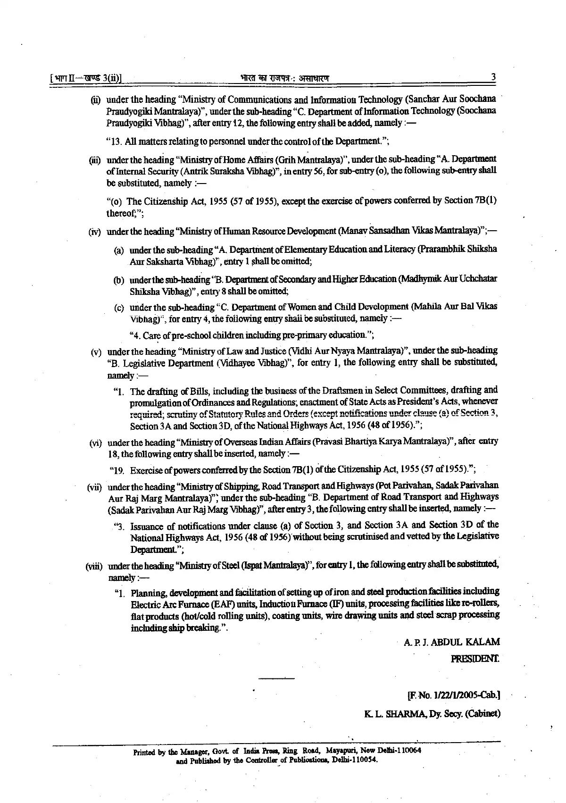

Amendment #281 (S.O. 1229(E), 2005)
10 changes: 0 to the First Schedule, 10 to the Second Schedule. 10 applied
The order, page by page
Page 1 of 3

Page 2 of 3

1after Schedule 2 › Ministry of Commerce and Industry › Department of Industrial Policy and Promotion › entry 31
- 31A. Matters concerning World Intellectual Property Organisation (WIPO) including co-ordination with other concerned Ministries or Departments.
applied at schedule 2 › ministry MINISTRY OF COMMERCE AND INDUSTRY › department B › group_heading V › entry 31A in the Rules after #281
Page 3 of 3

2345678910after Schedule 2 › Ministry of Communications and Information Technology › Department of Information Technology › entry 12
- 13. All matters relating to personnel under the control of the Department.
applied at schedule 2 › ministry MINISTRY OF COMMUNICATIONS AND INFORMATION TECHNOLOGY › department C › entry 13 in the Rules after #281
Schedule 2 › Ministry of Home Affairs › Department of Internal Security › entry 56 › item o
- o. The Citizenship Act, 1955 (57 of 1955), except the exercise of powers conferred by Section 7B(1) thereof
applied at schedule 2 › ministry MINISTRY OF HOME AFFAIRS › department A › group_heading II › entry 56 › item o in the Rules after #281
Schedule 2 › Ministry of Human Resource Development › Department of Elementary Education and Literacy › entry 1
applied at schedule 2 › ministry MINISTRY OF HUMAN RESOURCE DEVELOPMENT › department A › entry 1 in the Rules after #281
Schedule 2 › Ministry of Human Resource Development › Department of Secondary and Higher Education › entry 8
applied at schedule 2 › ministry MINISTRY OF HUMAN RESOURCE DEVELOPMENT › department B › entry 8 in the Rules after #281
Schedule 2 › Ministry of Human Resource Development › Department of Women and Child Development › entry 4
- 4. Care of pre-school children including pre-primary education.
applied at schedule 2 › ministry MINISTRY OF HUMAN RESOURCE DEVELOPMENT › department C › entry 4 in the Rules after #281
Schedule 2 › Ministry of Law and Justice › Legislative Department › entry 1
- 1. The drafting of Bills, including the business of the Draftsmen in Select Committees, drafting and promulgation of Ordinances and Regulations; enactment of State Acts as President's Acts, whenever required; scrutiny of Statutory Rules and Orders (except notifications under clause (a) of Section 3…
applied at schedule 2 › ministry MINISTRY OF LAW AND JUSTICE › department B › entry 1 in the Rules after #281
after Schedule 2 › Ministry of Overseas Indian Affairs › entry 18
- 19. Exercise of powers conferred by the Section 7B(1) of the Citizenship Act, 1955 (57 of 1955).
applied at schedule 2 › ministry Ministry of Overseas Indian Affairs (Pravasi Bhartiya Karya Mantralaya) › entry 19 in the Rules after #281
after Schedule 2 › Ministry of Shipping, Road Transport and Highways › Department of Road Transport and Highways › entry 3
- 3. Issuance of notifications under clause (a) of Section 3, and Section 3A and Section 3D of the National Highways Act, 1956 (48 of 1956) without being scrutinised and vetted by the Legislative Department.
applied at schedule 2 › ministry Ministry of Shipping, Road Transport and Highways › department B › group_heading I › entry 3 in the Rules after #281
Schedule 2 › Ministry of Steel › entry 1
- 1. Planning, development and facilitation of setting up of iron and steel production facilities including Electric Arc Furnace (EAF) units, Induction Furnace (IF) units, processing facilities like re-rollers flat products (hot/cold rolling units), coating units, wire drawing units and steel scrap…
applied at schedule 2 › ministry MINISTRY OF STEEL › entry 1 in the Rules after #281
How this document was read
From the Government of India (Allocation of Business) Rules, 1961 and their amendments, as published by the Cabinet Secretariat (cabsec.gov.in), read by orgpedia. The readings of the older scanned gazettes have known gaps.